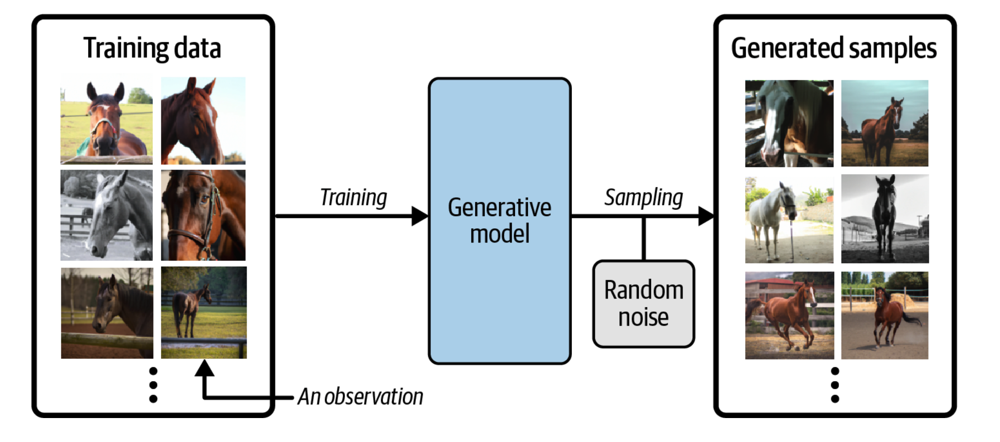

Advanced machine learning and data analysis for the physical sciences
May 13, 2024
Plans for the week of May 13-17, 2024
We have covered
- Discriminative methods
- Review of neural networks
- CNNs and RNNs
- Autoencoders and Principal component analysis
Types of machine learning
The approaches to machine learning are many, but are often split into two main categories. In supervised learning we know the answer to a problem, and let the computer deduce the logic behind it. On the other hand, unsupervised learning is a method for finding patterns and relationship in data sets without any prior knowledge of the system.
An emerging third category is reinforcement learning. This is a paradigm of learning inspired by behavioural psychology, where learning is achieved by trial-and-error, solely from rewards and punishment.
Main categories
Another way to categorize machine learning tasks is to consider the desired output of a system. Some of the most common tasks are:
- Classification: Outputs are divided into two or more classes. The goal is to produce a model that assigns inputs into one of these classes. An example is to identify digits based on pictures of hand-written ones. Classification is typically supervised learning.
- Regression: Finding a functional relationship between an input data set and a reference data set. The goal is to construct a function that maps input data to continuous output values.
- Clustering: Data are divided into groups with certain common traits, without knowing the different groups beforehand. It is thus a form of unsupervised learning.
Machine learning. A simple perspective on the interface between ML and Physics

The plethora of machine learning algorithms/methods
- Deep learning: Neural Networks (NN), Convolutional NN, Recurrent NN, Boltzmann machines, autoencoders and variational autoencoders and generative adversarial networks, stable diffusion and many more generative models
- Bayesian statistics and Bayesian Machine Learning, Bayesian experimental design, Bayesian Regression models, Bayesian neural networks, Gaussian processes and much more
- Dimensionality reduction (Principal component analysis), Clustering Methods and more
- Ensemble Methods, Random forests, bagging and voting methods, gradient boosting approaches
- Linear and logistic regression, Kernel methods, support vector machines and more
- Reinforcement Learning; Transfer Learning and more
Our focus has been on deep learning. But to discuss autoencoders we have also discussed PCA.
What Is Generative Modeling?
Generative modeling can be broadly defined as follows:
Generative modeling is a branch of machine learning that involves training a model to produce new data that is similar to a given dataset.
What does this mean in practice? Suppose we have a dataset containing photos of horses. We can train a generative model on this dataset to capture the rules that govern the complex relationships between pixels in images of horses. Then we can sample from this model to create novel, realistic images of horses that did not exist in the original dataset.
Example of generative modeling, taken from Generative Deep Learning by David Foster

Generative Modeling
In order to build a generative model, we require a dataset consisting of many examples of the entity we are trying to generate. This is known as the training data, and one such data point is called an observation.
Each observation consists of many features. For an image generation problem, the features are usually the individual pixel values; for a text generation problem, the features could be individual words or groups of letters. It is our goal to build a model that can generate new sets of features that look as if they have been created using the same rules as the original data. Conceptually, for image generation this is an incredibly difficult task, considering the vast number of ways that individual pixel values can be assigned and the relatively tiny number of such arrangements that constitute an image of the entity we are trying to generate.
Generative Versus Discriminative Modeling
In order to truly understand what generative modeling aims to achieve and why this is important, it is useful to compare it to its counterpart, discriminative modeling. If you have studied machine learning, most problems you will have faced will have most likely been discriminative in nature.
Example of discriminative modeling, taken from Generative Deeep Learning by David Foster

Discriminative Modeling
When performing discriminative modeling, each observation in the training data has a label. For a binary classification problem such as our data could be labeled as ones and zeros. Our model then learns how to discriminate between these two groups and outputs the probability that a new observation has label 1 or 0
In contrast, generative modeling doesn’t require the dataset to be labeled because it concerns itself with generating entirely new data (for example an image), rather than trying to predict a label for say a given image.
Taxonomy of generative deep learning, taken from Generative Deep Learning by David Foster

Good books with hands-on material and codes
All three books have GitHub sites from where one can download all codes. A good and more general text (2016) is Goodfellow, Bengio and Courville, Deep Learning
Setting up the basic equations for neural networks
Neural networks, in its so-called feed-forward form, where each iterations contains a feed-forward stage and a back-propgagation stage, consist of series of affine matrix-matrix and matrix-vector multiplications. The unknown parameters (the so-called biases and weights which deternine the architecture of a neural network), are uptaded iteratively using the so-called back-propagation algorithm. This algorithm corresponds to the so-called reverse mode of the automatic differentation algorithm. These algorithms will be discussed in more detail below.
We start however first with the definitions of the various variables which make up a neural network.
Overarching view of a neural network
The architecture of a neural network defines our model. This model aims at describing some function \( f(\boldsymbol{x} \) which aims at describing some final result (outputs or tagrget values) given a specific inpput \( \boldsymbol{x} \). Note that here \( \boldsymbol{y} \) and \( \boldsymbol{x} \) are not limited to be vectors.
The architecture consists of
- An input and an output layer where the input layer is defined by the inputs \( \boldsymbol{x} \). The output layer produces the model ouput \( \boldsymbol{\tilde{y}} \) which is compared with the target value \( \boldsymbol{y} \)
- A given number of hidden layers and neurons/nodes/units for each layer (this may vary)
- A given activation function \( \sigma(\boldsymbol{z}) \) with arguments \( \boldsymbol{z} \) to be defined below. The activation functions may differ from layer to layer.
- The last layer, normally called output layer has normally an activation function tailored to the specific problem
- Finally we define a so-called cost or loss function which is used to gauge the quality of our model.
Illustration of a single perceptron model and a multilayer FFNN

The optimization problem
The cost function is a function of the unknown parameters \( \boldsymbol{\Theta} \) where the latter is a container for all possible parameters needed to define a neural network
If we are dealing with a regression task a typical cost/loss function is the mean squared error
$$ C(\boldsymbol{\Theta})=\frac{1}{n}\left\{\left(\boldsymbol{y}-\boldsymbol{X}\boldsymbol{\theta}\right)^T\left(\boldsymbol{y}-\boldsymbol{X}\boldsymbol{\theta}\right)\right\}. $$This function represents one of many possible ways to define the so-called cost function.
Weights and biases
For neural networks the parameters \( \boldsymbol{\Theta} \) are given by the so-called weights and biases (to be defined below).
The weights are given by matrix elements \( w_{ij}^{(l)} \) where the superscript indicates the layer number. The biases are typically given by vector elements representing each single node of a given layer, that is \( b_j^{(l)} \).
Other ingredients of a neural network
Having defined the architecture of a neural network, the optimization of the cost function with respect to the parameters \( \boldsymbol{\Theta} \), involves the calculations of gradients and their optimization. The gradients represent the derivatives of a multidimensional object and are often approximated by various gradient methods, including
- various quasi-Newton methods,
- plain gradient descent (GD) with a constant learning rate \( \eta \),
- GD with momentum and other approximations to the learning rates such as
- Adapative gradient (ADAgrad)
- Root mean-square propagation (RMSprop)
- Adaptive gradient with momentum (ADAM) and many other
- Stochastic gradient descent and various families of learning rate approximations
Other parameters
In addition to the above, there are often additional hyperparamaters which are included in the setup of a neural network. These will be discussed below.
Why Feed Forward Neural Networks (FFNN)?
According to the Universal approximation theorem, a feed-forward neural network with just a single hidden layer containing a finite number of neurons can approximate a continuous multidimensional function to arbitrary accuracy, assuming the activation function for the hidden layer is a non-constant, bounded and monotonically-increasing continuous function.
Universal approximation theorem
The universal approximation theorem plays a central role in deep learning. Cybenko (1989) showed the following:
Let \( \sigma \) be any continuous sigmoidal function such that
$$ \sigma(z) = \left\{\begin{array}{cc} 1 & z\rightarrow \infty\\ 0 & z \rightarrow -\infty \end{array}\right. $$Given a continuous and deterministic function \( F(\boldsymbol{x}) \) on the unit cube in \( d \)-dimensions \( F\in [0,1]^d \), \( x\in [0,1]^d \) and a parameter \( \epsilon >0 \), there is a one-layer (hidden) neural network \( f(\boldsymbol{x};\boldsymbol{\Theta}) \) with \( \boldsymbol{\Theta}=(\boldsymbol{W},\boldsymbol{b}) \) and \( \boldsymbol{W}\in \mathbb{R}^{m\times n} \) and \( \boldsymbol{b}\in \mathbb{R}^{n} \), for which
$$ \vert F(\boldsymbol{x})-f(\boldsymbol{x};\boldsymbol{\Theta})\vert < \epsilon \hspace{0.1cm} \forall \boldsymbol{x}\in[0,1]^d. $$The approximation theorem in words
Any continuous function \( y=F(\boldsymbol{x}) \) supported on the unit cube in \( d \)-dimensions can be approximated by a one-layer sigmoidal network to arbitrary accuracy.
Hornik (1991) extended the theorem by letting any non-constant, bounded activation function to be included using that the expectation value
$$ \mathbb{E}[\vert F(\boldsymbol{x})\vert^2] =\int_{\boldsymbol{x}\in D} \vert F(\boldsymbol{x})\vert^2p(\boldsymbol{x})d\boldsymbol{x} < \infty. $$Then we have
$$ \mathbb{E}[\vert F(\boldsymbol{x})-f(\boldsymbol{x};\boldsymbol{\Theta})\vert^2] =\int_{\boldsymbol{x}\in D} \vert F(\boldsymbol{x})-f(\boldsymbol{x};\boldsymbol{\Theta})\vert^2p(\boldsymbol{x})d\boldsymbol{x} < \epsilon. $$More on the general approximation theorem
None of the proofs give any insight into the relation between the number of of hidden layers and nodes and the approximation error \( \epsilon \), nor the magnitudes of \( \boldsymbol{W} \) and \( \boldsymbol{b} \).
Neural networks (NNs) have what we may call a kind of universality no matter what function we want to compute.
It does not mean that an NN can be used to exactly compute any function. Rather, we get an approximation that is as good as we want.
Class of functions we can approximate
The class of functions that can be approximated are the continuous ones. If the function \( F(\boldsymbol{x}) \) is discontinuous, it won't in general be possible to approximate it. However, an NN may still give an approximation even if we fail in some points.
NN code
For an OO-code in Python for a feed-forward NN, see https://github.com/CompPhysics/AdvancedMachineLearning/blob/main/doc/pub/NNpart5code/ipynb/NNpart5code.ipynb
Convolutional Neural and Recurrent networks
See the lectures from weeks 6, 7 and 8
Autoencoders: Overarching view
Autoencoders are artificial neural networks capable of learning efficient representations of the input data (these representations are called codings) without any supervision (i.e., the training set is unlabeled). These codings typically have a much lower dimensionality than the input data, making autoencoders useful for dimensionality reduction.
Autoencoders learn to encode the input data into a lower-dimensional representation, and then decode it back to the original data. The goal of autoencoders is to minimize the reconstruction error, which measures how well the output matches the input. Autoencoders can be seen as a way of learning the latent features or hidden structure of the data, and they can be used for data compression, denoising, anomaly detection, and generative modeling.
Powerful detectors
More importantly, autoencoders act as powerful feature detectors, and they can be used for unsupervised pretraining of deep neural networks.
Lastly, they are capable of randomly generating new data that looks very similar to the training data; this is called a generative model. For example, you could train an autoencoder on pictures of faces, and it would then be able to generate new faces. Surprisingly, autoencoders work by simply learning to copy their inputs to their outputs. This may sound like a trivial task, but we will see that constraining the network in various ways can make it rather difficult. For example, you can limit the size of the internal representation, or you can add noise to the inputs and train the network to recover the original inputs. These constraints prevent the autoencoder from trivially copying the inputs directly to the outputs, which forces it to learn efficient ways of representing the data. In short, the codings are byproducts of the autoencoder’s attempt to learn the identity function under some constraints.
First introduction of AEs
Autoencoders were first introduced by Rumelhart, Hinton, and Williams in 1986 with the goal of learning to reconstruct the input observations with the lowest error possible.
Why would one want to learn to reconstruct the input observations? If you have problems imagining what that means, think of having a dataset made of images. An autoencoder would be an algorithm that can give as output an image that is as similar as possible to the input one. You may be confused, as there is no apparent reason of doing so. To better understand why autoencoders are useful we need a more informative (although not yet unambiguous) definition.
An autoencoder is a type of algorithm with the primary purpose of learning an "informative" representation of the data that can be used for different applications (see Bank, D., Koenigstein, N., and Giryes, R., Autoencoders) by learning to reconstruct a set of input observations well enough.
Autoencoder structure
Autoencoders are neural networks where the outputs are its own inputs. They are split into an encoder part which maps the input \( \boldsymbol{x} \) via a function \( f(\boldsymbol{x},\boldsymbol{W}) \) (this is the encoder part) to a so-called code part (or intermediate part) with the result \( \boldsymbol{h} \)
$$ \boldsymbol{h} = f(\boldsymbol{x},\boldsymbol{W})), $$where \( \boldsymbol{W} \) are the weights to be determined. The decoder parts maps, via its own parameters (weights given by the matrix \( \boldsymbol{V} \) and its own biases) to the final ouput
$$ \tilde{\boldsymbol{x}} = g(\boldsymbol{h},\boldsymbol{V})). $$The goal is to minimize the construction error.
Schematic image of an Autoencoder

More on the structure
In most typical architectures, the encoder and the decoder are neural networks since they can be easily trained with existing software libraries such as TensorFlow or PyTorch with back propagation.
In general, the encoder can be written as a function \( g \) that will depend on some parameters
$$ \mathbf{h}_{i} = g(\mathbf{x}_{i}), $$where \( \mathbf{h}_{i}\in\mathbb{R}^{q} \) (the latent feature representation) is the output of the encoder block where we evaluate it using the input \( \mathbf{x}_{i} \).
Decoder part
Note that we have \( g:\mathbb{R}^{n}\rightarrow\mathbb{R}^{q} \) The decoder and the output of the network \( \tilde{\mathbf{x}}_{i} \) can be written then as a second generic function of the latent features
$$ \tilde{\mathbf{x}}_{i} = f\left(\mathbf{h}_{i}\right) = f\left(g\left(\mathbf{x}_{i}\right)\right), $$where \( \tilde{\mathbf{x}}_{i}\mathbf{\in }\mathbb{R}^{n} \).
Training an autoencoder simply means finding the functions \( g(\cdot) \) and \( f(\cdot) \) that satisfy
$$ \textrm{arg}\min_{f,g}< \left[\Delta (\mathbf{x}_{i}, f(g\left(\mathbf{x}_{i}\right))\right]>. $$Typical AEs
The standard setup is done via a standard feed forward neural network (FFNN), or what is called a Feed Forward Autoencoder.
A typical FFNN architecture has an odd number of layers and is symmetrical with respect to the middle layer.
Typically, the first layer has a number of neurons \( n_{1} = n \) which equals the size of the input observation \( \mathbf{x}_{\mathbf{i}} \).
As we move toward the center of the network, the number of neurons in each layer drops in some measure. The middle layer usually has the smallest number of neurons. The fact that the number of neurons in this layer is smaller than the size of the input, is often called the bottleneck.
Feed Forward Autoencoder

Mirroring
In almost all practical applications, the layers after the middle one are a mirrored version of the layers before the middle one. For example, an autoencoder with three layers could have the following numbers of neurons:
\( n_{1} = 10 \), \( n_{2} = 5 \) and then \( n_{3} = n_{1} = 10 \) where the input dimension is equal to ten.
All the layers up to and including the middle one, make what is called the encoder, and all the layers from and including the middle one (up to the output) make what is called the decoder.
If the FFNN training is successful, the result will be a good approximation of the input \( \tilde{\mathbf{x}}_{i}\approx\mathbf{x}_{i} \).
What is essential to notice is that the decoder can reconstruct the input by using only a much smaller number of features than the input observations initially have.
Output of middle layer
The output of the middle layer \( \mathbf{h}_{\mathbf{i}} \) are also called a learned representation of the input observation \( \mathbf{x}_{i} \).
The encoder can reduce the number of dimensions of the input observation and create a learned representation \( \mathbf{h}_{\mathbf{i}}\mathbf{) } \) of the input that has a smaller dimension \( q < n \).
This learned representation is enough for the decoder to reconstruct the input accurately (if the autoencoder training was successful as intended).
Activation Function of the Output Layer
In autoencoders based on neural networks, the output layer's activation function plays a particularly important role. The most used functions are ReLU and Sigmoid.
ReLU
The ReLU activation function can assume all values in the range \( \left[0,\infty\right] \). As a remainder, its formula is
$$ \textrm{ReLU}\left(x\right) = \max\left(0,x\right). $$This choice is good when the input observations \(\mathbf{x}_{i}\) assume a wide range of positive values. If the input \( \mathbf{x}_{i} \) can assume negative values, the ReLU is, of course, a terrible choice, and the identity function is a much better choice. It is then common to replace to the ReLU with the so-called Leaky ReLu or just modified ReLU.
The ReLU activation function for the output layer is well suited for cases when the input observations \(\mathbf{x}_{i}\) assume a wide range of positive real values.
Sigmoid
The sigmoid function \( \sigma \) can assume all values in the range \( [0,1] \),
$$ \sigma\left(x\right) =\frac{1}{1+e^{-x}}. $$This activation function can only be used if the input observations \( \mathbf{x}_{i} \) are all in the range \( [0,1] \) or if you have normalized them to be in that range. Consider as an example the MNIST dataset. Each value of the input observation \( \mathbf{x}_{i} \) (one image) is the gray values of the pixels that can assume any value from 0 to 255. Normalizing the data by dividing the pixel values by 255 would make each observation (each image) have only pixel values between 0 and 1. In this case, the sigmoid would be a good choice for the output layer's activation function.
Cost/Loss Function
If an autoencoder is trying to solve a regression problem, the most common choice as a loss function is the Mean Square Error
$$ L_{\textrm{MSE}} = \textrm{MSE} = \frac{1}{n}\sum_{i = 1}^{n}\left\vert\vert\mathbf{x}_{i}-\tilde{\mathbf{x}}_{i}\right\vert\vert^{2}_2. $$Binary Cross-Entropy
If the activation function of the output layer of the AE is a sigmoid function, thus limiting neuron outputs to be between 0 and 1, and the input features are normalized to be between 0 and 1 we can use as loss function the binary cross-entropy. This cots/loss function is typically used in classification problems, but it works well for autoencoders. The formula for it is
$$ L_{\textrm{CE}} = -\frac{1}{n}\sum_{i = 1}^{n}\sum_{j = 1}^{p}[x_{j,i} \log\tilde{x}_{j,i}+\left(1-x_{j,i}\right)\log (1-\tilde{x}_{j,i})]. $$Reconstruction Error
The reconstruction error (RE) is a metric that gives you an indication of how good (or bad) the autoencoder was able to reconstruct the input observation \( \mathbf{x}_{i} \). The most typical RE used is the MSE
$$ \textrm{RE}\equiv \textrm{MSE} = \frac{1}{n}\sum_{i = 1}^{n}\left\vert\vert\mathbf{x}_{i}-\tilde{\mathbf{x}}_{i}\right\vert\vert^{2}_2. $$Essential elements of generative models
The aim of generative methods is to train a probability distribution \( p \). The methods we will focus on are:
- Energy based models, with the family of Boltzmann distributions as a typical example
- Variational autoencoders
- Diffusion models
- Generative adversarial networks (GANs) and
- Not covered: Autoregressive models
- Not covered: Normalizing flow models
Probability model
We define a probability
$$ p(x_i,h_j;\boldsymbol{\Theta}) = \frac{f(x_i,h_j;\boldsymbol{\Theta})}{Z(\boldsymbol{\Theta})}, $$where \( f(x_i,h_j;\boldsymbol{\Theta}) \) is a function which we assume is larger or equal than zero and obeys all properties required for a probability distribution and \( Z(\boldsymbol{\Theta}) \) is a normalization constant. Inspired by statistical mechanics, we call it often for the partition function. It is defined as (assuming that we have discrete probability distributions)
$$ Z(\boldsymbol{\Theta})=\sum_{x_i\in \boldsymbol{X}}\sum_{h_j\in \boldsymbol{H}} f(x_i,h_j;\boldsymbol{\Theta}). $$Marginal and conditional probabilities
We can in turn define the marginal probabilities
$$ p(x_i;\boldsymbol{\Theta}) = \frac{\sum_{h_j\in \boldsymbol{H}}f(x_i,h_j;\boldsymbol{\Theta})}{Z(\boldsymbol{\Theta})}, $$and
$$ p(h_i;\boldsymbol{\Theta}) = \frac{\sum_{x_i\in \boldsymbol{X}}f(x_i,h_j;\boldsymbol{\Theta})}{Z(\boldsymbol{\Theta})}. $$Change of notation
Note the change to a vector notation. A variable like \( \boldsymbol{x} \) represents now a specific configuration. We can generate an infinity of such configurations. The final partition function is then the sum over all such possible configurations, that is
$$ Z(\boldsymbol{\Theta})=\sum_{x_i\in \boldsymbol{X}}\sum_{h_j\in \boldsymbol{H}} f(x_i,h_j;\boldsymbol{\Theta}), $$changes to
$$ Z(\boldsymbol{\Theta})=\sum_{\boldsymbol{x}}\sum_{\boldsymbol{h}} f(\boldsymbol{x},\boldsymbol{h};\boldsymbol{\Theta}). $$If we have a binary set of variable \( x_i \) and \( h_j \) and \( M \) values of \( x_i \) and \( N \) values of \( h_j \) we have in total \( 2^M \) and \( 2^N \) possible \( \boldsymbol{x} \) and \( \boldsymbol{h} \) configurations, respectively.
We see that even for the modest binary case, we can easily approach a number of configuration which is not possible to deal with.
Optimization problem
At the end, we are not interested in the probabilities of the hidden variables. The probability we thus want to optimize is
$$ p(\boldsymbol{X};\boldsymbol{\Theta})=\prod_{x_i\in \boldsymbol{X}}p(x_i;\boldsymbol{\Theta})=\prod_{x_i\in \boldsymbol{X}}\left(\frac{\sum_{h_j\in \boldsymbol{H}}f(x_i,h_j;\boldsymbol{\Theta})}{Z(\boldsymbol{\Theta})}\right), $$which we rewrite as
$$ p(\boldsymbol{X};\boldsymbol{\Theta})=\frac{1}{Z(\boldsymbol{\Theta})}\prod_{x_i\in \boldsymbol{X}}\left(\sum_{h_j\in \boldsymbol{H}}f(x_i,h_j;\boldsymbol{\Theta})\right). $$Further simplifications
We simplify further by rewriting it as
$$ p(\boldsymbol{X};\boldsymbol{\Theta})=\frac{1}{Z(\boldsymbol{\Theta})}\prod_{x_i\in \boldsymbol{X}}f(x_i;\boldsymbol{\Theta}), $$where we used \( p(x_i;\boldsymbol{\Theta}) = \sum_{h_j\in \boldsymbol{H}}f(x_i,h_j;\boldsymbol{\Theta}) \). The optimization problem is then
$$ {\displaystyle \mathrm{arg} \hspace{0.1cm}\max_{\boldsymbol{\boldsymbol{\Theta}}\in {\mathbb{R}}^{p}}} \hspace{0.1cm}p(\boldsymbol{X};\boldsymbol{\Theta}). $$Optimizing the logarithm instead
Computing the derivatives with respect to the parameters \( \boldsymbol{\Theta} \) is easier (and equivalent) with taking the logarithm of the probability. We will thus optimize
$$ {\displaystyle \mathrm{arg} \hspace{0.1cm}\max_{\boldsymbol{\boldsymbol{\Theta}}\in {\mathbb{R}}^{p}}} \hspace{0.1cm}\log{p(\boldsymbol{X};\boldsymbol{\Theta})}, $$which leads to
$$ \nabla_{\boldsymbol{\Theta}}\log{p(\boldsymbol{X};\boldsymbol{\Theta})}=0. $$Expression for the gradients
This leads to the following equation
$$ \nabla_{\boldsymbol{\Theta}}\log{p(\boldsymbol{X};\boldsymbol{\Theta})}=\nabla_{\boldsymbol{\Theta}}\left(\sum_{x_i\in \boldsymbol{X}}\log{f(x_i;\boldsymbol{\Theta})}\right)-\nabla_{\boldsymbol{\Theta}}\log{Z(\boldsymbol{\Theta})}=0. $$The first term is called the positive phase and we assume that we have a model for the function \( f \) from which we can sample values. Below we will develop an explicit model for this. The second term is called the negative phase and is the one which leads to more difficulties.
The derivative of the partition function
The partition function, defined above as
$$ Z(\boldsymbol{\Theta})=\sum_{x_i\in \boldsymbol{X}}\sum_{h_j\in \boldsymbol{H}} f(x_i,h_j;\boldsymbol{\Theta}), $$is in general the most problematic term. In principle both \( x \) and \( h \) can span large degrees of freedom, if not even infinitely many ones, and computing the partition function itself is often not desirable or even feasible. The above derivative of the partition function can however be written in terms of an expectation value which is in turn evaluated using Monte Carlo sampling and the theory of Markov chains, popularly shortened to MCMC (or just MC$^2$).
Explicit expression for the derivative
We can rewrite
$$ \nabla_{\boldsymbol{\Theta}}\log{Z(\boldsymbol{\Theta})}=\frac{\nabla_{\boldsymbol{\Theta}}Z(\boldsymbol{\Theta})}{Z(\boldsymbol{\Theta})}, $$which reads in more detail
$$ \nabla_{\boldsymbol{\Theta}}\log{Z(\boldsymbol{\Theta})}=\frac{\nabla_{\boldsymbol{\Theta}} \sum_{x_i\in \boldsymbol{X}}f(x_i;\boldsymbol{\Theta}) }{Z(\boldsymbol{\Theta})}. $$We can rewrite the function \( f \) (we have assumed that is larger or equal than zero) as \( f=\exp{\log{f}} \). We can then rewrite the last equation as
$$ \nabla_{\boldsymbol{\Theta}}\log{Z(\boldsymbol{\Theta})}=\frac{ \sum_{x_i\in \boldsymbol{X}} \nabla_{\boldsymbol{\Theta}}\exp{\log{f(x_i;\boldsymbol{\Theta})}} }{Z(\boldsymbol{\Theta})}. $$Final expression
Taking the derivative gives us
$$ \nabla_{\boldsymbol{\Theta}}\log{Z(\boldsymbol{\Theta})}=\frac{ \sum_{x_i\in \boldsymbol{X}}f(x_i;\boldsymbol{\Theta}) \nabla_{\boldsymbol{\Theta}}\log{f(x_i;\boldsymbol{\Theta})} }{Z(\boldsymbol{\Theta})}, $$which is the expectation value of \( \log{f} \)
$$ \nabla_{\boldsymbol{\Theta}}\log{Z(\boldsymbol{\Theta})}=\sum_{x_i\sim p}p(x_i;\boldsymbol{\Theta}) \nabla_{\boldsymbol{\Theta}}\log{f(x_i;\boldsymbol{\Theta})}, $$that is
$$ \nabla_{\boldsymbol{\Theta}}\log{Z(\boldsymbol{\Theta})}=\mathbb{E}(\log{f(x_i;\boldsymbol{\Theta})}). $$This quantity is evaluated using Monte Carlo sampling, with Gibbs sampling as the standard sampling rule.
Final expression for the gradients
This leads to the following equation
$$ \nabla_{\boldsymbol{\Theta}}\log{p(\boldsymbol{X};\boldsymbol{\Theta})}=\nabla_{\boldsymbol{\Theta}}\left(\sum_{x_i\in \boldsymbol{X}}\log{f(x_i;\boldsymbol{\Theta})}\right)-\mathbb{E}_{x\sim p}(\log{f(x_i;\boldsymbol{\Theta})})=0. $$Introducing the energy model
As we will see below, a typical Boltzmann machines employs a probability distribution
$$ p(\boldsymbol{x},\boldsymbol{h};\boldsymbol{\Theta}) = \frac{f(\boldsymbol{x},\boldsymbol{h};\boldsymbol{\Theta})}{Z(\boldsymbol{\Theta})}, $$where \( f(\boldsymbol{x},\boldsymbol{h};\boldsymbol{\Theta}) \) is given by a so-called energy model. If we assume that the random variables \( x_i \) and \( h_j \) take binary values only, for example \( x_i,h_j=\{0,1\} \), we have a so-called binary-binary model where
$$ f(\boldsymbol{x},\boldsymbol{h};\boldsymbol{\Theta})=-E(\boldsymbol{x}, \boldsymbol{h};\boldsymbol{\Theta}) = \sum_{x_i\in \boldsymbol{X}} x_i a_i+\sum_{h_j\in \boldsymbol{H}} b_j h_j + \sum_{x_i\in \boldsymbol{X},h_j\in\boldsymbol{H}} x_i w_{ij} h_j, $$where the set of parameters are given by the biases and weights \( \boldsymbol{\Theta}=\{\boldsymbol{a},\boldsymbol{b},\boldsymbol{W}\} \). Note the vector notation instead of \( x_i \) and \( h_j \) for \( f \). The vectors \( \boldsymbol{x} \) and \( \boldsymbol{h} \) represent a specific instance of stochastic variables \( x_i \) and \( h_j \). These arrangements of \( \boldsymbol{x} \) and \( \boldsymbol{h} \) lead to a specific energy configuration.
More compact notation
With the above definition we can write the probability as
$$ p(\boldsymbol{x},\boldsymbol{h};\boldsymbol{\Theta}) = \frac{\exp{(\boldsymbol{a}^T\boldsymbol{x}+\boldsymbol{b}^T\boldsymbol{h}+\boldsymbol{x}^T\boldsymbol{W}\boldsymbol{h})}}{Z(\boldsymbol{\Theta})}, $$where the biases \( \boldsymbol{a} \) and \( \boldsymbol{h} \) and the weights defined by the matrix \( \boldsymbol{W} \) are the parameters we need to optimize.
Examples of gradient expressions
Since the binary-binary energy model is linear in the parameters \( a_i \), \( b_j \) and \( w_{ij} \), it is easy to see that the derivatives with respect to the various optimization parameters yield expressions used in the evaluation of gradients like
$$ \frac{\partial E(\boldsymbol{x}, \boldsymbol{h};\boldsymbol{\Theta})}{\partial w_{ij}}=-x_ih_j, $$and
$$ \frac{\partial E(\boldsymbol{x}, \boldsymbol{h};\boldsymbol{\Theta})}{\partial a_i}=-x_i, $$and
$$ \frac{\partial E(\boldsymbol{x}, \boldsymbol{h};\boldsymbol{\Theta})}{\partial b_j}=-h_j. $$Network Elements, the energy function
The function \( E(\boldsymbol{x},\boldsymbol{h},\boldsymbol{\Theta}) \) gives the energy of a configuration (pair of vectors) \( (\boldsymbol{x}, \boldsymbol{h}) \). The lower the energy of a configuration, the higher the probability of it. This function also depends on the parameters \( \boldsymbol{a} \), \( \boldsymbol{b} \) and \( W \). Thus, when we adjust them during the learning procedure, we are adjusting the energy function to best fit our problem.
Defining different types of RBMs
There are different variants of RBMs, and the differences lie in the types of visible and hidden units we choose as well as in the implementation of the energy function \( E(\boldsymbol{x},\boldsymbol{h},\boldsymbol{\Theta}) \). The connection between the nodes in the two layers is given by the weights \( w_{ij} \).
RBMs were first developed using binary units in both the visible and hidden layer. The corresponding energy function is defined as follows:
$$ \begin{align*} E(\boldsymbol{x}, \boldsymbol{h},\boldsymbol{\Theta}) = - \sum_i^M x_i a_i- \sum_j^N b_j h_j - \sum_{i,j}^{M,N} x_i w_{ij} h_j, \end{align*} $$where the binary values taken on by the nodes are most commonly 0 and 1.
Gaussian-binary RBM
Another varient is the RBM where the visible units are Gaussian while the hidden units remain binary:
$$ \begin{align*} E(\boldsymbol{x}, \boldsymbol{h},\boldsymbol{\Theta}) = \sum_i^M \frac{(x_i - a_i)^2}{2\sigma_i^2} - \sum_j^N b_j h_j - \sum_{i,j}^{M,N} \frac{x_i w_{ij} h_j}{\sigma_i^2}. \end{align*} $$This type of RBMs are useful when we model continuous data (i.e., we wish \( \boldsymbol{x} \) to be continuous). The paramater \( \sigma_i^2 \) is meant to represent a variance and is foten just set to one.
Code for RBMs using PyTorch
import numpy as np
import torch
import torch.utils.data
import torch.nn as nn
import torch.nn.functional as F
import torch.optim as optim
from torch.autograd import Variable
from torchvision import datasets, transforms
from torchvision.utils import make_grid , save_image
import matplotlib.pyplot as plt
batch_size = 64
train_loader = torch.utils.data.DataLoader(
datasets.MNIST('./data',
train=True,
download = True,
transform = transforms.Compose(
[transforms.ToTensor()])
),
batch_size=batch_size
)
test_loader = torch.utils.data.DataLoader(
datasets.MNIST('./data',
train=False,
transform=transforms.Compose(
[transforms.ToTensor()])
),
batch_size=batch_size)
class RBM(nn.Module):
def __init__(self,
n_vis=784,
n_hin=500,
k=5):
super(RBM, self).__init__()
self.W = nn.Parameter(torch.randn(n_hin,n_vis)*1e-2)
self.v_bias = nn.Parameter(torch.zeros(n_vis))
self.h_bias = nn.Parameter(torch.zeros(n_hin))
self.k = k
def sample_from_p(self,p):
return F.relu(torch.sign(p - Variable(torch.rand(p.size()))))
def v_to_h(self,v):
p_h = F.sigmoid(F.linear(v,self.W,self.h_bias))
sample_h = self.sample_from_p(p_h)
return p_h,sample_h
def h_to_v(self,h):
p_v = F.sigmoid(F.linear(h,self.W.t(),self.v_bias))
sample_v = self.sample_from_p(p_v)
return p_v,sample_v
def forward(self,v):
pre_h1,h1 = self.v_to_h(v)
h_ = h1
for _ in range(self.k):
pre_v_,v_ = self.h_to_v(h_)
pre_h_,h_ = self.v_to_h(v_)
return v,v_
def free_energy(self,v):
vbias_term = v.mv(self.v_bias)
wx_b = F.linear(v,self.W,self.h_bias)
hidden_term = wx_b.exp().add(1).log().sum(1)
return (-hidden_term - vbias_term).mean()
rbm = RBM(k=1)
train_op = optim.SGD(rbm.parameters(),0.1)
for epoch in range(10):
loss_ = []
for _, (data,target) in enumerate(train_loader):
data = Variable(data.view(-1,784))
sample_data = data.bernoulli()
v,v1 = rbm(sample_data)
loss = rbm.free_energy(v) - rbm.free_energy(v1)
loss_.append(loss.data)
train_op.zero_grad()
loss.backward()
train_op.step()
print("Training loss for {} epoch: {}".format(epoch, np.mean(loss_)))
def show_adn_save(file_name,img):
npimg = np.transpose(img.numpy(),(1,2,0))
f = "./%s.png" % file_name
plt.imshow(npimg)
plt.imsave(f,npimg)
show_adn_save("real",make_grid(v.view(32,1,28,28).data))
show_adn_save("generate",make_grid(v1.view(32,1,28,28).data))
Energy-based models and Langevin sampling
See discussions in Foster, chapter 7 on energy-based models at https://github.com/davidADSP/Generative_Deep_Learning_2nd_Edition/tree/main/notebooks/07_ebm/01_ebm
That notebook is based on a recent article by Du and Mordatch, Implicit generation and modeling with energy-based models, see https://arxiv.org/pdf/1903.08689.pdf.
Tensor-flow examples
- To create Boltzmann machine using Keras, see Babcock and Bali chapter 4, see https://github.com/PacktPublishing/Hands-On-Generative-AI-with-Python-and-TensorFlow-2/blob/master/Chapter_4/models/rbm.py
- See also Foster, chapter 7 on energy-based models at https://github.com/davidADSP/Generative_Deep_Learning_2nd_Edition/tree/main/notebooks/07_ebm/01_ebm
Kullback-Leibler divergence
Before we continue, we need to remind ourselves about the Kullback-Leibler divergence introduced earlier. These metrics are useful for quantifying the similarity between two probability distributions.
The Kullback–Leibler (KL) divergence, labeled \( D_{KL} \), measures how one probability distribution \( p \) diverges from a second expected probability distribution \( q \), that is
$$ D_{KL}(p \| q) = \int_x p(x) \log \frac{p(x)}{q(x)} dx. $$The KL-divegernce \( D_{KL} \) achieves the minimum zero when \( p(x) == q(x) \) everywhere.
VAEs
Mathematically, we can imagine the latent variables and the data we observe as modeled by a joint distribution \( p(\boldsymbol{x}, \boldsymbol{h};\boldsymbol{\Theta}) \). Recall one approach of generative modeling, termed likelihood-based, is to learn a model to maximize the likelihood \( p(\boldsymbol{x};\boldsymbol{\Theta}) \) of all observed \( \boldsymbol{x} \). There are two ways we can manipulate this joint distribution to recover the likelihood of purely our observed data \( p(\boldsymbol{x};\boldsymbol{\Theta}) \); we can explicitly marginalize out the latent variable \( \boldsymbol{h} \)
$$ \begin{equation*} p(\boldsymbol{x}) = \int p(\boldsymbol{x}, \boldsymbol{h})d\boldsymbol{h} \end{equation*} $$or, we could also appeal to the chain rule of probability
$$ \begin{equation*} p(\boldsymbol{x}) = \frac{p(\boldsymbol{x}, \boldsymbol{h})}{p(\boldsymbol{h}|\boldsymbol{x})} \end{equation*} $$We suppress here the dependence on the optimization parameters \( \boldsymbol{\Theta} \).
Introducing the encoder function
Here, \( q_{\boldsymbol{\phi}}(\boldsymbol{h}|\boldsymbol{x}) \) is a flexible approximate variational distribution with parameters \( \boldsymbol{\phi} \) that we seek to optimize. Intuitively, it can be thought of as a parameterizable model that is learned to estimate the true distribution over latent variables for given observations \( \boldsymbol{x} \); in other words, it seeks to approximate true posterior \( p(\boldsymbol{h}|\boldsymbol{x}) \). As we saw last week when we explored Variational Autoencoders, as we increase the lower bound by tuning the parameters \( \boldsymbol{\phi} \) to maximize the ELBO, we gain access to components that can be used to model the true data distribution and sample from it, thus learning a generative model.
ELBO
To better understand the relationship between the evidence and the ELBO, let us perform another derivation, this time using
$$ \begin{align*} \log p(\boldsymbol{x}) & = \log p(\boldsymbol{x}) \int q_{\boldsymbol{\phi}}(\boldsymbol{h}|\boldsymbol{x})d\boldsymbol{h} && \text{(Multiply by $1 = \int q_{\boldsymbol{\phi}}(\boldsymbol{h}|\boldsymbol{x})d\boldsymbol{h}$)}\\ & = \int q_{\boldsymbol{\phi}}(\boldsymbol{h}|\boldsymbol{x})(\log p(\boldsymbol{x}))d\boldsymbol{h} && \text{(Bring evidence into integral)}\\ & = \mathbb{E}_{q_{\boldsymbol{\phi}}(\boldsymbol{h}|\boldsymbol{x})}\left[\log p(\boldsymbol{x})\right] && \text{(Definition of Expectation)}\\ & = \mathbb{E}_{q_{\boldsymbol{\phi}}(\boldsymbol{h}|\boldsymbol{x})}\left[\log\frac{p(\boldsymbol{x}, \boldsymbol{h})}{p(\boldsymbol{h}|\boldsymbol{x})}\right]&& \\ & = \mathbb{E}_{q_{\boldsymbol{\phi}}(\boldsymbol{h}|\boldsymbol{x})}\left[\log\frac{p(\boldsymbol{x}, \boldsymbol{h})q_{\boldsymbol{\phi}}(\boldsymbol{h}|\boldsymbol{x})}{p(\boldsymbol{h}|\boldsymbol{x})q_{\boldsymbol{\phi}}(\boldsymbol{h}|\boldsymbol{x})}\right]&& \text{(Multiply by $1 = \frac{q_{\boldsymbol{\phi}}(\boldsymbol{h}|\boldsymbol{x})}{q_{\boldsymbol{\phi}}(\boldsymbol{h}|\boldsymbol{x})}$)}\\ & = \mathbb{E}_{q_{\boldsymbol{\phi}}(\boldsymbol{h}|\boldsymbol{x})}\left[\log\frac{p(\boldsymbol{x}, \boldsymbol{h})}{q_{\boldsymbol{\phi}}(\boldsymbol{h}|\boldsymbol{x})}\right] + \mathbb{E}_{q_{\boldsymbol{\phi}}(\boldsymbol{h}|\boldsymbol{x})}\left[\log\frac{q_{\boldsymbol{\phi}}(\boldsymbol{h}|\boldsymbol{x})}{p(\boldsymbol{h}|\boldsymbol{x})}\right] && \text{(Split the Expectation)}\\ & = \mathbb{E}_{q_{\boldsymbol{\phi}}(\boldsymbol{h}|\boldsymbol{x})}\left[\log\frac{p(\boldsymbol{x}, \boldsymbol{h})}{q_{\boldsymbol{\phi}}(\boldsymbol{h}|\boldsymbol{x})}\right] + D_{KL}(q_{\boldsymbol{\phi}}(\boldsymbol{h}|\boldsymbol{x})\vert\vert p(\boldsymbol{h}|\boldsymbol{x})) && \text{(Definition of KL Divergence)}\\ & \geq \mathbb{E}_{q_{\boldsymbol{\phi}}(\boldsymbol{h}|\boldsymbol{x})}\left[\log\frac{p(\boldsymbol{x}, \boldsymbol{h})}{q_{\boldsymbol{\phi}}(\boldsymbol{h}|\boldsymbol{x})}\right] && \text{(KL Divergence always $\geq 0$)} \end{align*} $$The VAE
In the default formulation of the VAE by Kingma and Welling (2015), we directly maximize the ELBO. This approach is \textit{variational}, because we optimize for the best \( q_{\boldsymbol{\phi}}(\boldsymbol{h}|\boldsymbol{x}) \) amongst a family of potential posterior distributions parameterized by \( \boldsymbol{\phi} \). It is called an \textit{autoencoder} because it is reminiscent of a traditional autoencoder model, where input data is trained to predict itself after undergoing an intermediate bottlenecking representation step.
Dissecting the equations
To make this connection explicit, let us dissect the ELBO term further:
$$ \begin{align*} {\mathbb{E}_{q_{\boldsymbol{\phi}}(\boldsymbol{h}|\boldsymbol{x})}\left[\log\frac{p(\boldsymbol{x}, \boldsymbol{h})}{q_{\boldsymbol{\phi}}(\boldsymbol{h}|\boldsymbol{x})}\right]} &= {\mathbb{E}_{q_{\boldsymbol{\phi}}(\boldsymbol{h}|\boldsymbol{x})}\left[\log\frac{p_{\boldsymbol{\theta}}(\boldsymbol{x}|\boldsymbol{h})p(\boldsymbol{h})}{q_{\boldsymbol{\phi}}(\boldsymbol{h}|\boldsymbol{x})}\right]} && {\text{(Chain Rule of Probability)}}\\ &= {\mathbb{E}_{q_{\boldsymbol{\phi}}(\boldsymbol{h}|\boldsymbol{x})}\left[\log p_{\boldsymbol{\theta}}(\boldsymbol{x}|\boldsymbol{h})\right] + \mathbb{E}_{q_{\boldsymbol{\phi}}(\boldsymbol{h}|\boldsymbol{x})}\left[\log\frac{p(\boldsymbol{h})}{q_{\boldsymbol{\phi}}(\boldsymbol{h}|\boldsymbol{x})}\right]} && {\text{(Split the Expectation)}}\\ &= \underbrace{{\mathbb{E}_{q_{\boldsymbol{\phi}}(\boldsymbol{h}|\boldsymbol{x})}\left[\log p_{\boldsymbol{\theta}}(\boldsymbol{x}|\boldsymbol{h})\right]}}_\text{reconstruction term} - \underbrace{{D_{KL}(q_{\boldsymbol{\phi}}(\boldsymbol{h}|\boldsymbol{x})}\vert\vert{p(\boldsymbol{h}))}}_\text{prior matching term} && {\text{(Definition of KL Divergence)}} \end{align*} $$Bottlenecking distribution
In this case, we learn an intermediate bottlenecking distribution \( q_{\boldsymbol{\phi}}(\boldsymbol{h}|\boldsymbol{x}) \) that can be treated as an \textit{encoder}; it transforms inputs into a distribution over possible latents. Simultaneously, we learn a deterministic function \( p_{\boldsymbol{\theta}}(\boldsymbol{x}|\boldsymbol{h}) \) to convert a given latent vector \( \boldsymbol{h} \) into an observation \( \boldsymbol{x} \), which can be interpreted as a \textit{decoder}.
Decoder and encoder
The two terms in the last equation each have intuitive descriptions: the first term measures the reconstruction likelihood of the decoder from our variational distribution; this ensures that the learned distribution is modeling effective latents that the original data can be regenerated from. The second term measures how similar the learned variational distribution is to a prior belief held over latent variables. Minimizing this term encourages the encoder to actually learn a distribution rather than collapse into a Dirac delta function. Maximizing the ELBO is thus equivalent to maximizing its first term and minimizing its second term.
Defining feature of VAEs
A defining feature of the VAE is how the ELBO is optimized jointly over parameters \( \boldsymbol{\phi} \) and \( \boldsymbol{\theta} \). The encoder of the VAE is commonly chosen to model a multivariate Gaussian with diagonal covariance, and the prior is often selected to be a standard multivariate Gaussian:
$$ \begin{align*} q_{\boldsymbol{\phi}}(\boldsymbol{h}|\boldsymbol{x}) &= N(\boldsymbol{h}; \boldsymbol{\mu}_{\boldsymbol{\phi}}(\boldsymbol{x}), \boldsymbol{\sigma}_{\boldsymbol{\phi}}^2(\boldsymbol{x})\textbf{I})\\ p(\boldsymbol{h}) &= N(\boldsymbol{h}; \boldsymbol{0}, \textbf{I}) \end{align*} $$Analytical evaluation
Then, the KL divergence term of the ELBO can be computed analytically, and the reconstruction term can be approximated using a Monte Carlo estimate. Our objective can then be rewritten as:
$$ \begin{align*} \mathrm{argmax}_{\boldsymbol{\phi}, \boldsymbol{\theta}} \mathbb{E}_{q_{\boldsymbol{\phi}}(\boldsymbol{h}|\boldsymbol{x})}\left[\log p_{\boldsymbol{\theta}}(\boldsymbol{x}|\boldsymbol{h})\right] - D_{KL}(q_{\boldsymbol{\phi}}(\boldsymbol{h}|\boldsymbol{x})\vert\vert p(\boldsymbol{h})) \approx \mathrm{argmax}_{\boldsymbol{\phi}, \boldsymbol{\theta}} \sum_{l=1}^{L}\log p_{\boldsymbol{\theta}}(\boldsymbol{x}|\boldsymbol{h}^{(l)}) - D_{KL}(q_{\boldsymbol{\phi}}(\boldsymbol{h}|\boldsymbol{x})\vert\vert p(\boldsymbol{h})) \end{align*} $$where latents \( \{\boldsymbol{h}^{(l)}\}_{l=1}^L \) are sampled from \( q_{\boldsymbol{\phi}}(\boldsymbol{h}|\boldsymbol{x}) \), for every observation \( \boldsymbol{x} \) in the dataset.
Diffusion models, basics
Diffusion models are inspired by non-equilibrium thermodynamics. They define a Markov chain of diffusion steps to slowly add random noise to data and then learn to reverse the diffusion process to construct desired data samples from the noise. Unlike VAE or flow models, diffusion models are learned with a fixed procedure and the latent variable has high dimensionality (same as the original data).
Problems with probabilistic models
Historically, probabilistic models suffer from a tradeoff between two conflicting objectives: \textit{tractability} and \textit{flexibility}. Models that are \textit{tractable} can be analytically evaluated and easily fit to data (e.g. a Gaussian or Laplace). However, these models are unable to aptly describe structure in rich datasets. On the other hand, models that are \textit{flexible} can be molded to fit structure in arbitrary data. For example, we can define models in terms of any (non-negative) function \( \phi(\boldsymbol{x}) \) yielding the flexible distribution \( p\left(\boldsymbol{x}\right) = \frac{\phi\left(\boldsymbol{x} \right)}{Z} \), where \( Z \) is a normalization constant. However, computing this normalization constant is generally intractable. Evaluating, training, or drawing samples from such flexible models typically requires a very expensive Monte Carlo process.
Diffusion models
Diffusion models have several interesting features
- extreme flexibility in model structure,
- exact sampling,
- easy multiplication with other distributions, e.g. in order to compute a posterior, and
- the model log likelihood, and the probability of individual states, to be cheaply evaluated.
Original idea
In the original formulation, one uses a Markov chain to gradually convert one distribution into another, an idea used in non-equilibrium statistical physics and sequential Monte Carlo. Diffusion models build a generative Markov chain which converts a simple known distribution (e.g. a Gaussian) into a target (data) distribution using a diffusion process. Rather than use this Markov chain to approximately evaluate a model which has been otherwise defined, one can explicitly define the probabilistic model as the endpoint of the Markov chain. Since each step in the diffusion chain has an analytically evaluable probability, the full chain can also be analytically evaluated.
Diffusion learning
Learning in this framework involves estimating small perturbations to a diffusion process. Estimating small, analytically tractable, perturbations is more tractable than explicitly describing the full distribution with a single, non-analytically-normalizable, potential function. Furthermore, since a diffusion process exists for any smooth target distribution, this method can capture data distributions of arbitrary form.
Mathematics of diffusion models
Let us go back our discussions of the variational autoencoders from last week, see https://github.com/CompPhysics/AdvancedMachineLearning/blob/main/doc/pub/week15/ipynb/week15.ipynb. As a first attempt at understanding diffusion models, we can think of these as stacked VAEs, or better, recursive VAEs.
Let us try to see why. As an intermediate step, we consider so-called hierarchical VAEs, which can be seen as a generalization of VAEs that include multiple hierarchies of latent spaces.
Note: Many of the derivations and figures here are inspired and borrowed from the excellent exposition of diffusion models by Calvin Luo at https://arxiv.org/abs/2208.11970.
Chains of VAEs
Markovian VAEs represent a generative process where we use Markov chain to build a hierarchy of VAEs.
Each transition down the hierarchy is Markovian, where we decode each latent set of variables \( \boldsymbol{h}_t \) in terms of the previous latent variable \( \boldsymbol{h}_{t-1} \). Intuitively, and visually, this can be seen as simply stacking VAEs on top of each other (see figure next slide).
One can think of such a model as a recursive VAE.
Mathematical representation
Mathematically, we represent the joint distribution and the posterior of a Markovian VAE as
$$ \begin{align*} p(\boldsymbol{x}, \boldsymbol{h}_{1:T}) &= p(\boldsymbol{h}_T)p_{\boldsymbol{\theta}}(\boldsymbol{x}|\boldsymbol{h}_1)\prod_{t=2}^{T}p_{\boldsymbol{\theta}}(\boldsymbol{h}_{t-1}|\boldsymbol{h}_{t})\\ q_{\boldsymbol{\phi}}(\boldsymbol{h}_{1:T}|\boldsymbol{x}) &= q_{\boldsymbol{\phi}}(\boldsymbol{h}_1|\boldsymbol{x})\prod_{t=2}^{T}q_{\boldsymbol{\phi}}(\boldsymbol{h}_{t}|\boldsymbol{h}_{t-1}) \end{align*} $$Diffusion models for hierarchical VAE, from https://arxiv.org/abs/2208.11970
A Markovian hierarchical Variational Autoencoder with \( T \) hierarchical latents. The generative process is modeled as a Markov chain, where each latent \( \boldsymbol{h}_t \) is generated only from the previous latent \( \boldsymbol{h}_{t+1} \). Here \( \boldsymbol{z} \) is our latent variable \( \boldsymbol{h} \).

Equation for the Markovian hierarchical VAE
We obtain then
$$ \begin{align*} \mathbb{E}_{q_{\boldsymbol{\phi}}(\boldsymbol{h}_{1:T}|\boldsymbol{x})}\left[\log \frac{p(\boldsymbol{x}, \boldsymbol{h}_{1:T})}{q_{\boldsymbol{\phi}}(\boldsymbol{h}_{1:T}|\boldsymbol{x})}\right] &= \mathbb{E}_{q_{\boldsymbol{\phi}}(\boldsymbol{h}_{1:T}|\boldsymbol{x})}\left[\log \frac{p(\boldsymbol{h}_T)p_{\boldsymbol{\theta}}(\boldsymbol{x}|\boldsymbol{h}_1)\prod_{t=2}^{T}p_{\boldsymbol{\theta}}(\boldsymbol{h}_{t-1}|\boldsymbol{h}_{t})}{q_{\boldsymbol{\phi}}(\boldsymbol{h}_1|\boldsymbol{x})\prod_{t=2}^{T}q_{\boldsymbol{\phi}}(\boldsymbol{h}_{t}|\boldsymbol{h}_{t-1})}\right] \end{align*} $$We will modify this equation when we discuss what are normally called Variational Diffusion Models.
Variational Diffusion Models
The easiest way to think of a Variational Diffusion Model (VDM) is as a Markovian Hierarchical Variational Autoencoder with three key restrictions:
- The latent dimension is exactly equal to the data dimension
- The structure of the latent encoder at each timestep is not learned; it is pre-defined as a linear Gaussian model. In other words, it is a Gaussian distribution centered around the output of the previous timestep
- The Gaussian parameters of the latent encoders vary over time in such a way that the distribution of the latent at final timestep \( T \) is a standard Gaussian
The VDM posterior is
$$ \begin{align*} q(\boldsymbol{x}_{1:T}|\boldsymbol{x}_0) = \prod_{t = 1}^{T}q(\boldsymbol{x}_{t}|\boldsymbol{x}_{t-1}) \end{align*} $$Second assumption
The distribution of each latent variable in the encoder is a Gaussian centered around its previous hierarchical latent. Here then, the structure of the encoder at each timestep \( t \) is not learned; it is fixed as a linear Gaussian model, where the mean and standard deviation can be set beforehand as hyperparameters, or learned as parameters.
Parameterizing Gaussian encoder
We parameterize the Gaussian encoder with mean \( \boldsymbol{\mu}_t(\boldsymbol{x}_t) = \sqrt{\alpha_t} \boldsymbol{x}_{t-1} \), and variance \( \boldsymbol{\Sigma}_t(\boldsymbol{x}_t) = (1 - \alpha_t) \textbf{I} \), where the form of the coefficients are chosen such that the variance of the latent variables stay at a similar scale; in other words, the encoding process is variance-preserving.
Note that alternate Gaussian parameterizations are allowed, and lead to similar derivations. The main takeaway is that \( \alpha_t \) is a (potentially learnable) coefficient that can vary with the hierarchical depth \( t \), for flexibility.
Encoder transitions
Mathematically, the encoder transitions are defined as
$$ \begin{align*} q(\boldsymbol{x}_{t}|\boldsymbol{x}_{t-1}) = \mathcal{N}(\boldsymbol{x}_{t} ; \sqrt{\alpha_t} \boldsymbol{x}_{t-1}, (1 - \alpha_t) \textbf{I}) \label{eq:27} \end{align*} $$Third assumption
From the third assumption, we know that \( \alpha_t \) evolves over time according to a fixed or learnable schedule structured such that the distribution of the final latent \( p(\boldsymbol{x}_T) \) is a standard Gaussian. We can then update the joint distribution of a Markovian VAE to write the joint distribution for a VDM as
$$ \begin{align*} p(\boldsymbol{x}_{0:T}) &= p(\boldsymbol{x}_T)\prod_{t=1}^{T}p_{\boldsymbol{\theta}}(\boldsymbol{x}_{t-1}|\boldsymbol{x}_t) \\ \text{where,}&\nonumber\\ p(\boldsymbol{x}_T) &= \mathcal{N}(\boldsymbol{x}_T; \boldsymbol{0}, \textbf{I}) \end{align*} $$Noisification
Collectively, what this set of assumptions describes is a steady noisification of an image input over time. We progressively corrupt an image by adding Gaussian noise until eventually it becomes completely identical to pure Gaussian noise. See figure on next slide.
Diffusion models, from https://arxiv.org/abs/2208.11970

Gaussian modeling
Note that our encoder distributions \( q(\boldsymbol{x}_t|\boldsymbol{x}_{t-1}) \) are no longer parameterized by \( \boldsymbol{\phi} \), as they are completely modeled as Gaussians with defined mean and variance parameters at each timestep. Therefore, in a VDM, we are only interested in learning conditionals \( p_{\boldsymbol{\theta}}(\boldsymbol{x}_{t-1}|\boldsymbol{x}_{t}) \), so that we can simulate new data. After optimizing the VDM, the sampling procedure is as simple as sampling Gaussian noise from \( p(\boldsymbol{x}_T) \) and iteratively running the denoising transitions \( p_{\boldsymbol{\theta}}(\boldsymbol{x}_{t-1}|\boldsymbol{x}_{t}) \) for \( T \) steps to generate a novel \( \boldsymbol{x}_0 \).
Optimizing the variational diffusion model
$$ \begin{align*} \log p(\boldsymbol{x}) &= \log \int p(\boldsymbol{x}_{0:T}) d\boldsymbol{x}_{1:T}\\ &= \log \int \frac{p(\boldsymbol{x}_{0:T})q(\boldsymbol{x}_{1:T}|\boldsymbol{x}_0)}{q(\boldsymbol{x}_{1:T}|\boldsymbol{x}_0)} d\boldsymbol{x}_{1:T}\\ &= \log \mathbb{E}_{q(\boldsymbol{x}_{1:T}|\boldsymbol{x}_0)}\left[\frac{p(\boldsymbol{x}_{0:T})}{q(\boldsymbol{x}_{1:T}|\boldsymbol{x}_0)}\right]\\ &\geq {\mathbb{E}_{q(\boldsymbol{x}_{1:T}|\boldsymbol{x}_0)}\left[\log \frac{p(\boldsymbol{x}_{0:T})}{q(\boldsymbol{x}_{1:T}|\boldsymbol{x}_0)}\right]}\\ &= {\mathbb{E}_{q(\boldsymbol{x}_{1:T}|\boldsymbol{x}_0)}\left[\log \frac{p(\boldsymbol{x}_T)\prod_{t=1}^{T}p_{\boldsymbol{\theta}}(\boldsymbol{x}_{t-1}|\boldsymbol{x}_t)}{\prod_{t = 1}^{T}q(\boldsymbol{x}_{t}|\boldsymbol{x}_{t-1})}\right]}\\ &= {\mathbb{E}_{q(\boldsymbol{x}_{1:T}|\boldsymbol{x}_0)}\left[\log \frac{p(\boldsymbol{x}_T)p_{\boldsymbol{\theta}}(\boldsymbol{x}_0|\boldsymbol{x}_1)\prod_{t=2}^{T}p_{\boldsymbol{\theta}}(\boldsymbol{x}_{t-1}|\boldsymbol{x}_t)}{q(\boldsymbol{x}_T|\boldsymbol{x}_{T-1})\prod_{t = 1}^{T-1}q(\boldsymbol{x}_{t}|\boldsymbol{x}_{t-1})}\right]}\\ &= {\mathbb{E}_{q(\boldsymbol{x}_{1:T}|\boldsymbol{x}_0)}\left[\log \frac{p(\boldsymbol{x}_T)p_{\boldsymbol{\theta}}(\boldsymbol{x}_0|\boldsymbol{x}_1)\prod_{t=1}^{T-1}p_{\boldsymbol{\theta}}(\boldsymbol{x}_{t}|\boldsymbol{x}_{t+1})}{q(\boldsymbol{x}_T|\boldsymbol{x}_{T-1})\prod_{t = 1}^{T-1}q(\boldsymbol{x}_{t}|\boldsymbol{x}_{t-1})}\right]}\\ &= {\mathbb{E}_{q(\boldsymbol{x}_{1:T}|\boldsymbol{x}_0)}\left[\log \frac{p(\boldsymbol{x}_T)p_{\boldsymbol{\theta}}(\boldsymbol{x}_0|\boldsymbol{x}_1)}{q(\boldsymbol{x}_T|\boldsymbol{x}_{T-1})}\right] + \mathbb{E}_{q(\boldsymbol{x}_{1:T}|\boldsymbol{x}_0)}\left[\log \prod_{t = 1}^{T-1}\frac{p_{\boldsymbol{\theta}}(\boldsymbol{x}_{t}|\boldsymbol{x}_{t+1})}{q(\boldsymbol{x}_{t}|\boldsymbol{x}_{t-1})}\right]}\\ \end{align*} $$Continues
$$ \begin{align*} \log p(\boldsymbol{x}) &= {\mathbb{E}_{q(\boldsymbol{x}_{1:T}|\boldsymbol{x}_0)}\left[\log \frac{p(\boldsymbol{x}_T)p_{\boldsymbol{\theta}}(\boldsymbol{x}_0|\boldsymbol{x}_1)}{q(\boldsymbol{x}_T|\boldsymbol{x}_{T-1})}\right] + \mathbb{E}_{q(\boldsymbol{x}_{1:T}|\boldsymbol{x}_0)}\left[\log \prod_{t = 1}^{T-1}\frac{p_{\boldsymbol{\theta}}(\boldsymbol{x}_{t}|\boldsymbol{x}_{t+1})}{q(\boldsymbol{x}_{t}|\boldsymbol{x}_{t-1})}\right]}\\ &= {\mathbb{E}_{q(\boldsymbol{x}_{1:T}|\boldsymbol{x}_0)}\left[\log p_{\boldsymbol{\theta}}(\boldsymbol{x}_0|\boldsymbol{x}_1)\right] + \mathbb{E}_{q(\boldsymbol{x}_{1:T}|\boldsymbol{x}_0)}\left[\log \frac{p(\boldsymbol{x}_T)}{q(\boldsymbol{x}_T|\boldsymbol{x}_{T-1})}\right] + \mathbb{E}_{q(\boldsymbol{x}_{1:T}|\boldsymbol{x}_0)}\left[ \sum_{t=1}^{T-1} \log \frac{p_{\boldsymbol{\theta}}(\boldsymbol{x}_{t}|\boldsymbol{x}_{t+1})}{q(\boldsymbol{x}_{t}|\boldsymbol{x}_{t-1})}\right]}\\ &= {\mathbb{E}_{q(\boldsymbol{x}_{1:T}|\boldsymbol{x}_0)}\left[\log p_{\boldsymbol{\theta}}(\boldsymbol{x}_0|\boldsymbol{x}_1)\right] + \mathbb{E}_{q(\boldsymbol{x}_{1:T}|\boldsymbol{x}_0)}\left[\log \frac{p(\boldsymbol{x}_T)}{q(\boldsymbol{x}_T|\boldsymbol{x}_{T-1})}\right] + \sum_{t=1}^{T-1}\mathbb{E}_{q(\boldsymbol{x}_{1:T}|\boldsymbol{x}_0)}\left[ \log \frac{p_{\boldsymbol{\theta}}(\boldsymbol{x}_{t}|\boldsymbol{x}_{t+1})}{q(\boldsymbol{x}_{t}|\boldsymbol{x}_{t-1})}\right]}\\ &= {\mathbb{E}_{q(\boldsymbol{x}_{1}|\boldsymbol{x}_0)}\left[\log p_{\boldsymbol{\theta}}(\boldsymbol{x}_0|\boldsymbol{x}_1)\right] + \mathbb{E}_{q(\boldsymbol{x}_{T-1}, \boldsymbol{x}_T|\boldsymbol{x}_0)}\left[\log \frac{p(\boldsymbol{x}_T)}{q(\boldsymbol{x}_T|\boldsymbol{x}_{T-1})}\right] + \sum_{t=1}^{T-1}\mathbb{E}_{q(\boldsymbol{x}_{t-1}, \boldsymbol{x}_t, \boldsymbol{x}_{t+1}|\boldsymbol{x}_0)}\left[\log \frac{p_{\boldsymbol{\theta}}(\boldsymbol{x}_{t}|\boldsymbol{x}_{t+1})}{q(\boldsymbol{x}_{t}|\boldsymbol{x}_{t-1})}\right]}\\ \end{align*} $$Interpretations
These equations can be interpreted as
- \( \mathbb{E}_{q(\boldsymbol{x}_{1}|\boldsymbol{x}_0)}\left[\log p_{\boldsymbol{\theta}}(\boldsymbol{x}_0|\boldsymbol{x}_1)\right] \) can be interpreted as a reconstruction term, predicting the log probability of the original data sample given the first-step latent. This term also appears in a vanilla VAE, and can be trained similarly.
- \( \mathbb{E}_{q(\boldsymbol{x}_{T-1}|\boldsymbol{x}_0)}\left[D_{KL}(q(\boldsymbol{x}_T|\boldsymbol{x}_{T-1})\vert\vert p(\boldsymbol{x}_T))\right] \) is a prior matching term; it is minimized when the final latent distribution matches the Gaussian prior. This term requires no optimization, as it has no trainable parameters; furthermore, as we have assumed a large enough \( T \) such that the final distribution is Gaussian, this term effectively becomes zero.
The last term
- \( \mathbb{E}_{q(\boldsymbol{x}_{t-1}, \boldsymbol{x}_{t+1}|\boldsymbol{x}_0)}\left[D_{KL}(q(\boldsymbol{x}_{t}|\boldsymbol{x}_{t-1})\vert\vert p_{\boldsymbol{\theta}}(\boldsymbol{x}_{t}|\boldsymbol{x}_{t+1}))\right] \) is a \textit{consistency term}; it endeavors to make the distribution at \( \boldsymbol{x}_t \) consistent, from both forward and backward processes. That is, a denoising step from a noisier image should match the corresponding noising step from a cleaner image, for every intermediate timestep; this is reflected mathematically by the KL Divergence. This term is minimized when we train \( p_{\theta}(\boldsymbol{x}_t|\boldsymbol{x}_{t+1}) \) to match the Gaussian distribution \( q(\boldsymbol{x}_t|\boldsymbol{x}_{t-1}) \).
Diffusion models, part 2, from https://arxiv.org/abs/2208.11970

Optimization cost
The cost of optimizing a VDM is primarily dominated by the third term, since we must optimize over all timesteps \( t \).
Under this derivation, all three terms are computed as expectations, and can therefore be approximated using Monte Carlo estimates. However, actually optimizing the ELBO using the terms we just derived might be suboptimal; because the consistency term is computed as an expectation over two random variables \( \left\{\boldsymbol{x}_{t-1}, \boldsymbol{x}_{t+1}\right\} \) for every timestep, the variance of its Monte Carlo estimate could potentially be higher than a term that is estimated using only one random variable per timestep. As it is computed by summing up \( T-1 \) consistency terms, the final estimated value may have high variance for large \( T \) values.
More details
For more details and implementations, see Calvin Luo at https://arxiv.org/abs/2208.11970
What is a GAN?
A GAN is a deep neural network which consists of two networks, a so-called generator network and a discriminating network, or just discriminator. Through several iterations of generation and discrimination, the idea is that these networks will train each other, while also trying to outsmart each other.
In its simplest version, the two networks could be two standard neural networks with a given number of hidden of hidden layers and parameters to train. The generator we have trained can then be used to produce new images.
Labeling the networks
For a GAN we have:
- a discriminator \( D \) estimates the probability of a given sample coming from the real dataset. It attempts at discriminating the trained data by the generator and is optimized to tell the fake samples from the real ones (our data set). We say a discriminator tries to distinguish between real data and those generated by the abovementioned generator.
- a generator \( G \) outputs synthetic samples given a noise variable input \( z \) (\( z \) brings in potential output diversity). It is trained to capture the real data distribution in order to generate samples that can be as real as possible, or in other words, can trick the discriminator to offer a high probability.
At the end of the training, the generator can be used to generate for example new images. In this sense we have trained a model which can produce new samples. We say that we have implicitely defined a probability.
Which data?
GANs are generally a form of unsupervised machine learning, although they also incorporate aspects of supervised learning. Internally the discriminator sets up a supervised learning problem. Its goal is to learn to distinguish between the two classes of generated data and original data. The generator then considers this classification problem and tries to find adversarial examples, that is samples which will be misclassified by the discriminator.
Semi-supervised learning
One can also design GAN architectures which work in a semi-supervised learning setting. A semi-supervised learning environment includes both labeled and unlabeled data. See https://proceedings.neurips.cc/paper_files/paper/2016/file/8a3363abe792db2d8761d6403605aeb7-Paper.pdf for a further discussion.
Thus, GANs can be used both on labeled and on unlabeled data and are used in three most commonly used contexts, that is
- with labeled data (supervised training)
- with unlabeled data (unsupervised learning)
- a with a mix labed and unlabeled data
Improving functionalities
These two models compete against each other during the training process: the generator \( G \) is trying hard to trick the discriminator, while the critic model \( D \) is trying hard not to be cheated. This interesting zero-sum game between two models motivates both to improve their functionalities.
Setup of the GAN
We define a probability \( p_{\boldsymbol{h}} \) which is used by the generator. Usually it is given by a uniform distribution over the input \( \boldsymbol{h} \). Thereafter we define the distribution of the generator which we want to train, \( p_{g} \) This is the generator's distribution over the data \( \boldsymbol{x} \). Finally, we have the distribution \( p_{r} \) over the real sample \( \boldsymbol{x} \)
Optimization part
On one hand, we want to make sure the discriminator \( D \)'s decisions over real data are accurate by maximizing \( \mathbb{E}_{\boldsymbol{x} \sim p_{r}(\boldsymbol{x})} [\log D(\boldsymbol{x})] \). Meanwhile, given a fake sample \( G(\boldsymbol{h}), \boldsymbol{h} \sim p_{\boldsymbol{h}}(\boldsymbol{h}) \), the discriminator is expected to output a probability, \( D(G(\boldsymbol{h})) \), close to zero by maximizing \( \mathbb{E}_{\boldsymbol{h} \sim p_{\boldsymbol{h}}(\boldsymbol{h})} [\log (1 - D(G(\boldsymbol{h})))] \).
On the other hand, the generator is trained to increase the chances of \( D \) producing a high probability for a fake example, thus to minimize \( \mathbb{E}_{\boldsymbol{h} \sim p_{\boldsymbol{h}}(\boldsymbol{h})} [\log (1 - D(G(\boldsymbol{h})))] \).
Minimax game
When combining both aspects together, \( D \) and \( G \) are playing a minimax game in which we should optimize the following loss function:
$$ \begin{aligned} \min_G \max_D L(D, G) & = \mathbb{E}_{\boldsymbol{x} \sim p_{r}(\boldsymbol{x})} [\log D(\boldsymbol{x})] + \mathbb{E}_{\boldsymbol{h} \sim p_{\boldsymbol{h}}(\boldsymbol{h})} [\log(1 - D(G(\boldsymbol{h})))] \\ & = \mathbb{E}_{\boldsymbol{x} \sim p_{r}(\boldsymbol{x})} [\log D(\boldsymbol{x})] + \mathbb{E}_{\boldsymbol{x} \sim p_g(\boldsymbol{x})} [\log(1 - D(\boldsymbol{x})] \end{aligned} $$where \( \mathbb{E}_{\boldsymbol{x} \sim p_{r}(\boldsymbol{x})} [\log D(\boldsymbol{x})] \) has no impact on \( G \) during gradient descent updates.
Optimal value for \( D \)
Now we have a well-defined loss function. Let's first examine what is the best value for \( D \).
$$ L(G, D) = \int_{\boldsymbol{x}} \bigg( p_{r}(\boldsymbol{x}) \log(D(\boldsymbol{x})) + p_g (\boldsymbol{x}) \log(1 - D(\boldsymbol{x})) \bigg) d\boldsymbol{x} $$Best value of \( D \)
Since we are interested in what is the best value of \( D(\boldsymbol{x}) \) to maximize \( L(G, D) \), let us label
$$ \tilde{\boldsymbol{x}} = D(\boldsymbol{x}), A=p_{r}(\boldsymbol{x}), B=p_g(\boldsymbol{x}) $$Integral evaluation
The integral (we can safely ignore the integral because \( \boldsymbol{x} \) is sampled over all the possible values) is:
$$ \begin{align*} f(\tilde{\boldsymbol{x}}) & = A \log{\tilde{\boldsymbol{x}}} + B \log{(1-\tilde{\boldsymbol{x}})} \\ \frac{d f(\tilde{\boldsymbol{x}})}{d \tilde{\boldsymbol{x}}} & = A \frac{1}{\tilde{\boldsymbol{x}}} - B\frac{1}{1 - \tilde{\boldsymbol{x}}} \\ & = \frac{A - (A + B)\tilde{\boldsymbol{x}}} {\tilde{\boldsymbol{x}} (1 - \tilde{\boldsymbol{x}})}. \\ \end{align*} $$Best values
If we set
$$ \frac{d f(\tilde{\boldsymbol{x}})}{d \tilde{\boldsymbol{x}}} = 0, $$we get the best value of the discriminator:
$$ D^*(\boldsymbol{x}) = \tilde{\boldsymbol{x}}^* =\frac{A}{A + B} = \frac{p_{r}(\boldsymbol{x})}{p_{r}(\boldsymbol{x}) + p_g(\boldsymbol{x})} \in [0, 1]. $$Once the generator is trained to its optimal, \( p_g \) gets very close to \( p_{r} \). When \( p_g = p_{r} \), \( D^*(\boldsymbol{x}) \) becomes \( 1/2 \). We will observe this when running the code from last week (see jupyter-notebook from week 15).
At their optimal values
When both \( G \) and \( D \) are at their optimal values, we have \( p_g = p_{r} \) and \( D^*(\boldsymbol{x}) = 1/2 \), the loss function becomes
$$ \begin{align*} L(G, D^*) &= \int_{\boldsymbol{x}} \bigg( p_{r}(\boldsymbol{x}) \log(D^*(\boldsymbol{x})) + p_g (\boldsymbol{x}) \log(1 - D^*(\boldsymbol{x})) \bigg) d\boldsymbol{x} \\ &= \log \frac{1}{2} \int_{\boldsymbol{h}} p_{r}(\boldsymbol{x}) d\boldsymbol{x} + \log \frac{1}{2} \int_{\boldsymbol{x}} p_g(\boldsymbol{x}) d\boldsymbol{x} \\ &= -2\log2 \end{align*} $$What does the Loss Function Represent?
The JS divergence between \( p_{r} \) and \( p_g \) can be computed as:
$$ \begin{align*} D_{JS}(p_{r} \| p_g) =& \frac{1}{2} D_{KL}(p_{r} || \frac{p_{r} + p_g}{2}) + \frac{1}{2} D_{KL}(p_{g} || \frac{p_{r} + p_g}{2}) \\ =& \frac{1}{2} \bigg( \log2 + \int_x p_{r}(\boldsymbol{x}) \log \frac{p_{r}(\boldsymbol{x})}{p_{r} + p_g(\boldsymbol{x})} d\boldsymbol{x} \bigg) + \\& \frac{1}{2} \bigg( \log2 + \int_x p_g(\boldsymbol{x}) \log \frac{p_g(\boldsymbol{x})}{p_{r} + p_g(\boldsymbol{x})} d\boldsymbol{x} \bigg) \\ =& \frac{1}{2} \bigg( \log4 + L(G, D^*) \bigg) \end{align*} $$What does the loss function quantify?
We have
$$ L(G, D^*) = 2D_{JS}(p_{r} \| p_g) - 2\log2. $$The loss function of GANs quantifies the similarity between the generative data distribution \( p_g \) and the real sample distribution \( p_{r} \) by the so-called JS divergence when the discriminator is optimal. The best \( G^* \) that replicates the real data distribution leads to the minimum \( L(G^*, D^*) = -2\log2 \).
Problems with GANs
Although GANs have achieved great success in the generation of realistic images, the training is not easy; The process is known to be slow and unstable.
Two models are trained simultaneously to an equilibrium to a two-player non-cooperative game. However, each model updates its cost independently with no respect to another player in the game. Updating the gradient of both models concurrently cannot guarantee a convergence.
Vanishing Gradient
When the discriminator is perfect, we are guaranteed with \( D(\boldsymbol{x}) = 1, \forall \boldsymbol{x} \in p_r \) and \( D(\boldsymbol{x}) = 0, \forall \boldsymbol{x} \in p_g \).
Then, the loss function \( L \) falls to zero and we end up with no gradient to update the loss during learning iterations. One can encouter situations where the discriminator gets better and the gradient vanishes fast.
As a result, training GANs may face the following problems
- If the discriminator behaves badly, the generator does not have accurate feedback and the loss function cannot represent the real data
- If the discriminator does a great job, the gradient of the loss function drops down to close to zero and the learning can become slow
Improved GANs
One of the solutions to improved GANs training, is the introduction of what is called the Wasserstein diatance, which is a way to compute the difference/distance between two probability distribitions. For those interested in reading more, we recommend for example chapter 17 of Rashcka's et al textbook, Machine Learning with PyTorch and Scikit-Learn, chapter 17, see https://github.com/rasbt/python-machine-learning-book-3rd-edition/tree/master/ch17
For a definition of the Wasserstein distance, see for example https://arxiv.org/pdf/2103.01678